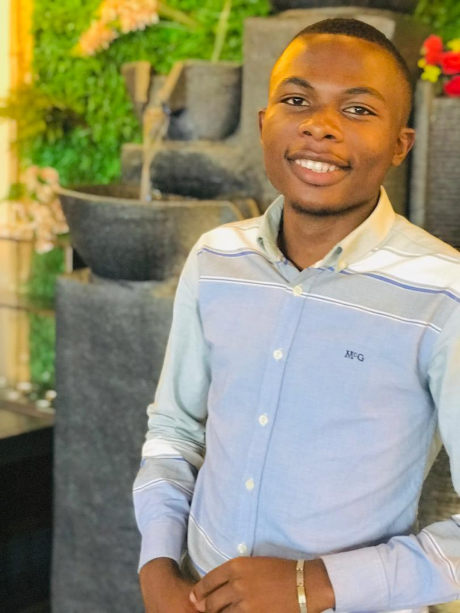

A propos de Vainqueur MUSELE
Vainqueur Musele est né a lubumbashi le 4 avril de Florence NKULU et Christian MUSELE il est deuxieme d'une famille de quatre personne dont deux filles et deux garcons.
PRESENTATION
De part ses capacités naturelles liées au leadership qui font sa plus grande force et qui lui ont sans doute amener a créer certaines plateformes et structure dont il est responsable dont voicis certaines d'entre elles:
- Plume d'or
- Together for their joy
- Nouvelle vie
Hormis tout ceci Vainqueur Musele est electronicien de formation et a une grande passion pour la technique et c'est l'une de raisons qui l'ont guidés en informatique.
PARCOURS SCOLAIRE
Au cours de son parcours scolaire Vainqueur Musele est passé dans écoles salesiennes ayant une bone formation.
cliquez ici pour voir les noms écoles